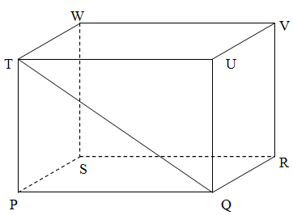

-
Diketahui panjang seluruh rusuk kubus 156 cm. berapa panjang masing-masing rusuk kubus tersebut ?
- a. 12
- b. 13
- c. 16
-
Panjang kawat yang dibutuhkan untuk membuat suatu kerangka balok adalah 1,8m. Jika balok tersebut memiliki panjang 22cm dan lebar 14cm, maka tinggi balok tersebut adalah ?
- a. 6
- b. 9
- c. 10
-
Perhatikan gambar dibawah ini !

Tentukan bagaimana cara menghitung panjang diagonal bidang QT !
a. QT = √ PQ + PT b. QT = √ PQ2 - PT2 c. QT = √ PQ2 + PT2
-
Perhatikan gambar dibawah ini !
Sebuah balok memiliki panjang 12cm, lebar 8cm dan tinggi 10cm. Tentukan panjang diagonal bidang QT !
- a. 2 √61
- b. 3 √61
- c. 6 √61
-
Perhatikan gambar dibawah ini !
Sebuah kubus memiliki panjang sisi 10cm. Tentukan panjang diagonal ruang BH dari kubus di atas !
- a. 11cm
- b. 10 √2cm
- c. 10 √3cm
-
Perhatikan gambar dibawah ini !
Tentukan bagaimana cara menghitung panjang diagonal ruang BH !
a. BH = √ BD + DH b. BH = √ AD2 - DH2 c. BH = √ BD2 + DH2
-
Pak Asep akan membuat kerangka kubus dengan menggunakan kawat. Berapa meter kawat yang dibutuhkan pak Asep jika panjang rusuk kubus tersebut 21 cm ?
- a. 2,24m
- b. 2,34m
- c. 2,44m
-
Sebuah kubus memiliki panjang sisi 15 cm dan panjang diagonal bidang 15√2 cm. Tentukan luas bidang diagonal dari kubus tersebut!
- a. 225 cm2
- b. 225√2 cm2
- c. 225√3 cm2
-
Sebuah kubus memiliki panjang sisi 12 cm. Tentukan panjang diagonal bidang!
- a. 12√2 cm
- b. 13√2 cm
- c. 14√2 cm
-
Perhatikan gambar dibawah ini !
Tentukan panjang diagonal ruang BH dari balok di atas!
- a. 6 cm
- b. 6√20 cm
- c. 6√29 cm